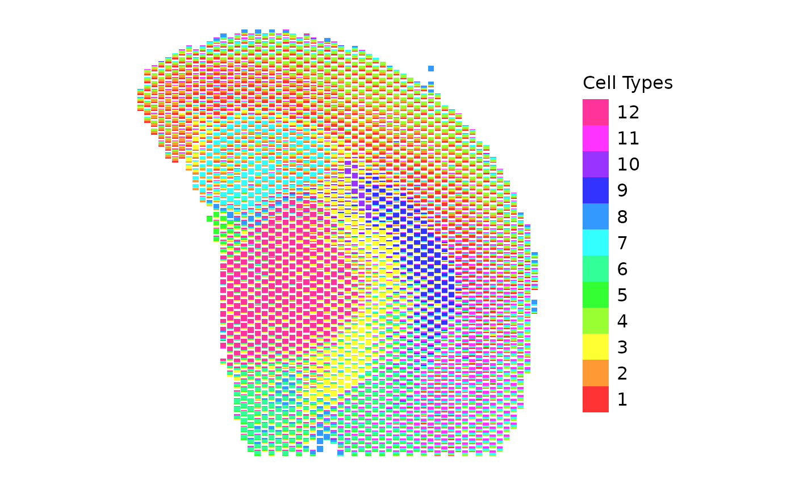
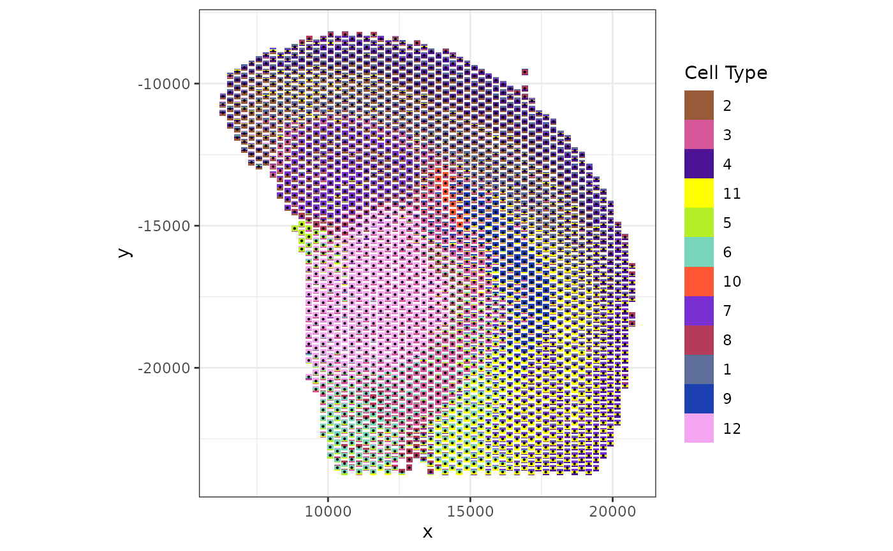

Using scatterbar with Visium data
Dee Velazquez and Jean Fan
2024-11-26
Source:vignettes/using-scatterbar-with-visium.Rmd
using-scatterbar-with-visium.RmdUsing scatterbar with Visium data
Below is how to use scatterbar from the provided Visium
dataset of an FFPE preserved adult mouse brain partial coronal section
from 10X Genomics.
library(scatterbar)
library(ggplot2)
data("adult_mouse_brain_ffpe")
plot(adult_mouse_brain_ffpe$pos)
head(adult_mouse_brain_ffpe$prop)
#> 1 2 3 4 5 6
#> AAACAGAGCGACTCCT-1 0.1264103 0.00000000 0.0000000 0.2183626 0.0000000 0.0000000
#> AAACCCGAACGAAATC-1 0.0000000 0.00000000 0.0000000 0.0000000 0.1612265 0.7494948
#> AAACCGGGTAGGTACC-1 0.2881994 0.32242398 0.0000000 0.3893766 0.0000000 0.0000000
#> AAACCGTTCGTCCAGG-1 0.3040547 0.27785934 0.2535515 0.0000000 0.0000000 0.0000000
#> AAACGAAGAACATACC-1 0.1585737 0.09403518 0.0000000 0.3510139 0.0000000 0.0000000
#> AAACGAGACGGTTGAT-1 0.0000000 0.00000000 0.2962469 0.0000000 0.0000000 0.0000000
#> 7 8 9 10 11 12
#> AAACAGAGCGACTCCT-1 0.1865617 0 0.07496736 0 0.39369799 0.00000000
#> AAACCCGAACGAAATC-1 0.0000000 0 0.00000000 0 0.00000000 0.08927876
#> AAACCGGGTAGGTACC-1 0.0000000 0 0.00000000 0 0.00000000 0.00000000
#> AAACCGTTCGTCCAGG-1 0.0768548 0 0.00000000 0 0.08767969 0.00000000
#> AAACGAAGAACATACC-1 0.2808292 0 0.00000000 0 0.11554800 0.00000000
#> AAACGAGACGGTTGAT-1 0.0000000 0 0.00000000 0 0.00000000 0.70375311
start.time <- Sys.time()
scatterbar(
adult_mouse_brain_ffpe$prop,
adult_mouse_brain_ffpe$pos,
size_x = 220,
size_y = 220,
legend_title = "Cell Types"
) + coord_fixed()
#> Calculated size_x: 220
#> Calculated size_y: 220
#> Applied padding_x: 0
#> Applied padding_y: 0
Just like with the mOB data, we can change the order of how each bar
is laid out by changing the order of the cell-type proportion matrix and
combine scatterbar with other ggplot geoms and
customization.
start.time <- Sys.time()
custom_colors <- c('1'= '#5d6f99',
'2' = '#985a39',
'3' = '#d6589a',
'4' = '#4d1395',
'5' = '#b5ef27',
'6' = '#77d5bc',
'7' = '#7830d2',
'8' ='#b43b59',
'9' = '#1c40b1',
'10' = "#FF5733",
'11' = '#FFFF00',
'12' = '#f4a6f1')
scatterbar::scatterbar(adult_mouse_brain_ffpe$prop[, c(2,3,4,11,5,6,10,7,8,1,9, 12)], adult_mouse_brain_ffpe$pos, size_x = 220, size_y = 220, padding_x = 0.1, padding_y = 0.1, legend_title = 'Cell Type', colors = custom_colors) +
geom_point(data=adult_mouse_brain_ffpe$pos, mapping=aes(x=x, y=y), size = 0.1) +
theme_bw() + ylab('y') + ggplot2::coord_fixed()
#> Calculated size_x: 219.9
#> Calculated size_y: 219.9
#> Applied padding_x: 0.1
#> Applied padding_y: 0.1